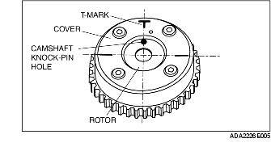

Variable valve timing actuator inspection
1. Verify that the camshaft knock pin hole of the rotor and the T-mark on the cover of the variable valve timing actuator are aligned and placed at the same position by rotating them by hand.

- • If the camshaft knock pin hole and the T- mark are not aligned, rotate the rotor (the camshaft installing part) until a click is heard, and verify that they are fixed in place.
- • If the rotor is not secured even though their camshaft knock pin hole and the T-mark are aligned, replace the variable valve timing actuator.